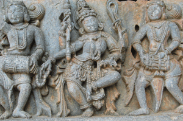
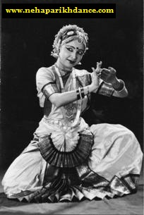
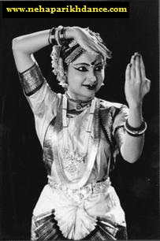
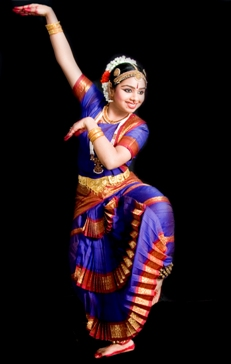
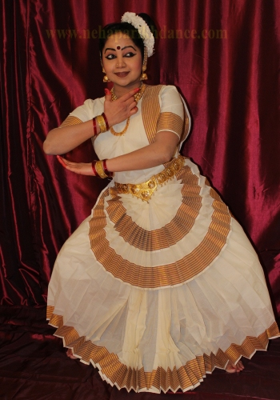
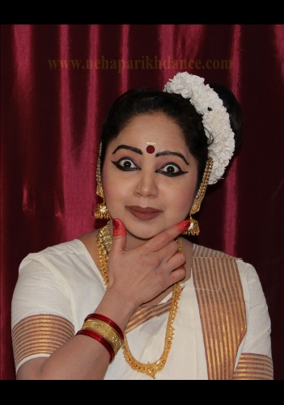

About Indian Dance Art Forms
The Classical Art Forms of India
The aim of all Indian art is to produce aesthetic enjoyment or 'rasa' in the spectator.
According to the 'Natya Sastra', the Indian text of dance and drama dating back to approximately 200 B.C., a dancer must prepare himself/herself mentally and then employ certain techniques in order to succeed in producing rasa.

These dance forms are comprised of three aspects, 'Nritta' - pure dance, 'Abhinaya' - expressive mime and 'Nritya' - a combination of both Nritta and Abhinaya.
All Indian dances are religious in thematic content as their origin is from mythology and epics. Thus the storiesPoses portrayed in these dances, are generally associated with the Gods of the Hindu pantheon and give scope for dramatic presentation.
Bharatanatyam

Bharata Natyam dance is a form of Yoga - in the sense that it involves physical discipline and training to achieve perfection in form and is also the ultimate ‘ yoga’ or union with the God which needs true Bhakti (Devotion to God).
Bharata Natyam has been handed down through centuries by dance teachers called Nattuvanaars and temple dancers called Devadasis.
It is a solo dance form, born in the temple and devotional in spirit.
Bharata Natyam style is an exalted one, circumscribed by meticulous rules governing style and technique.Though this art form is serene and tranquil in nature, Bharata Natyam is notable for it’s complex rhythmic patterns, the clear geometries made by the dancer’s body and the geometries within the performance space.
The Abhinaya of traditional Bharata Natyam revolves around a heroine in a state of anticipation of either separation or union with her beloved. As this woman anticipating a union with her lover is also a metaphor for the human-being waiting for a union with the Unseen, it can be interpreted in either a religious or secular frame work.
The combination and subtleties of these movements and themes, their close connections with Carnatic music and the vast realm of Indian mythology, give Bharata Natyam a rare union of complexity and accessibility which are key to art of exquisite beauty.
Mohiniattam
Mohiniyattam, also spelt Mohiniattam is a traditional South Indian dance from Kerala, developed by the Tamil nattuvanar (dance master) Vadivelu,one of the Thanjavur Quartet.
It is a feminine dance form. The term Mohiniattam comes from the words "Mohini" meaning a woman who enchants onlookers and "aattam" meaning graceful and sensuous body movements.
The word "Mohiniattam" literally means "dance of the enchantress". This dance which has influences and elements from two South Indian dance forms, the Bharatanatyam and Kathakali, was formulated in the court of King Swati Tirunal by Vadivelu.
Here the movements of the dancer’s body could be compared to the gently undulating palm fronds filling up the Kerala skyline.
There is a lot of heaving of the chest and swaying movements like the coconut palms. The gait and the stepping are reminiscent of a boat bobbing up and down in the gently soaring back waters of the kerala landscape, the land of Mohiniattam.
{kind=link}